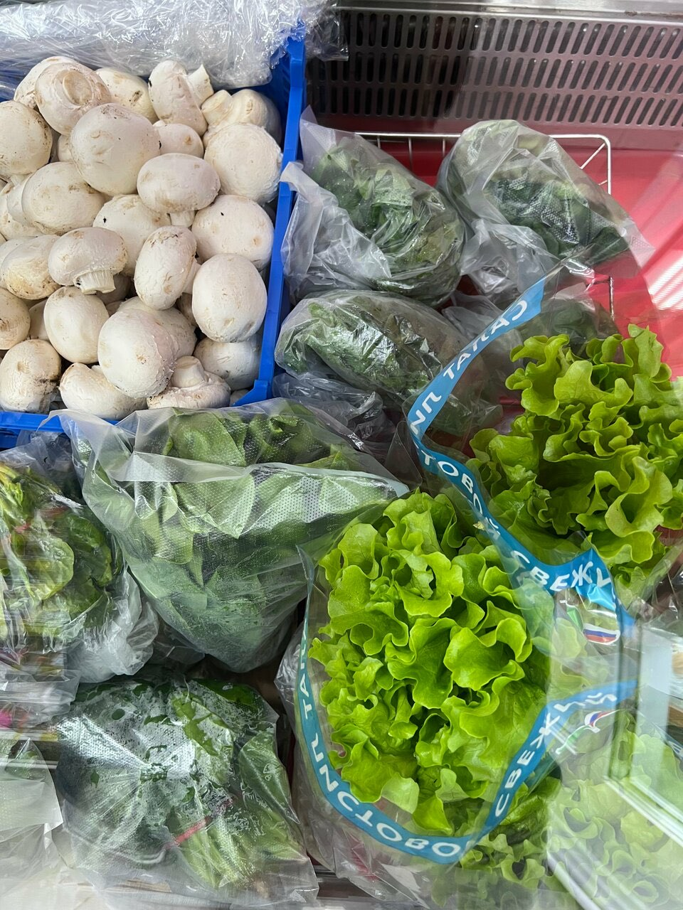
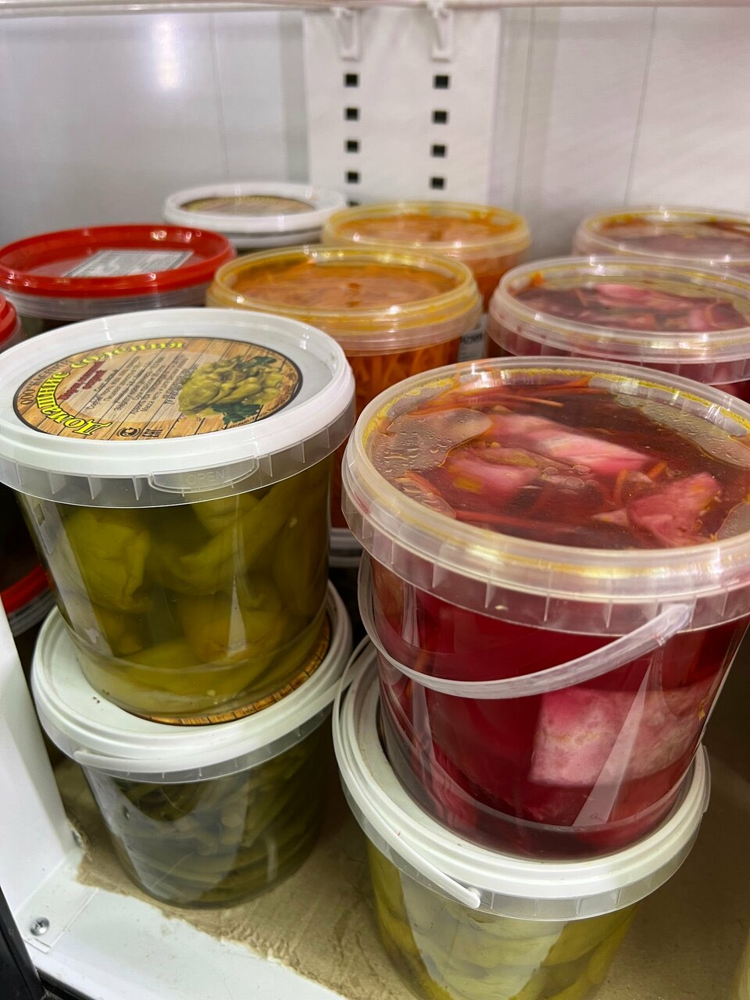
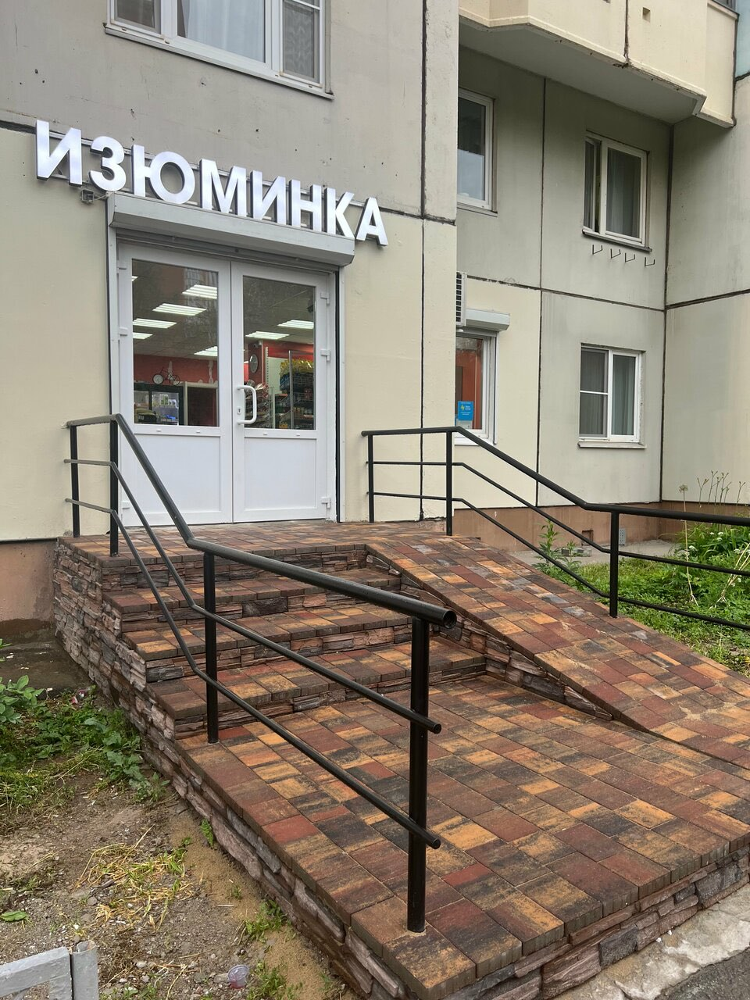

Прилавок
Овощи, фрукты, зелень
Капуста, картошка, гранаты и мандарины в ящиках посреди зала. Сезонные помидоры и огурцы, ягоды, шампиньоны, салат и пучки зелени.
Отменные сезонные помидоры и огурцы.Нурсултан Утегенов, июль 2024


Армянский сыр и соленья
Армянский сыр и домашняя консервация. На полках чурчхела и соленья в вёдрах.
А сыр армянский!!! Консервация и много всего домашнего как в АрменииИриночка, июль 2024
Орехи, сухофрукты, выпечка
Смеси орехов, грецкий орех, сухофрукты, восточные сладости. Рогалики и домашняя выпечка к чаю.
Еще есть выпечка, моя любимая - рогалики с грецким орехом!Елена Яковлева, октябрь 2025
И всё на каждый день
Молочка и йогурты, хлеб, крупы, маслины и специи, замороженные ягоды и овощи, рыба, мороженое, вода, лимонад и соки.
Всё есть практически, никуда ехать за продуктами не нужно.Наталья Берчатова, март 2025
Привозят каждый день.Не совсем знаток, август 2024
«Я туда прихожу как к своим родственникам.»
«Всегда скажут, что вкусное, выберут хорошие продукты. Одновременно тактичные и приветливые. … Меня уже знают даже по имени.»
«Когда мы уезжали на год, я грустила по этому магазину, так как в нем было все необходимое. А главное люди.»
Анна Грачева, май 2024
Ходят годами
«Покупаю в этом магазине больше 12 лет… Хозяин магазина молодец…»
Алексей Чемисов, декабрь 2024
«…спрашиваешь у продавцов - они рекомендуют честно и довольно точно, что очень важно.»
Данил Мишин, февраль 2024
«Почти каждый день тут бываю, живу рядом. Магазин проверен временем, продукты хорошего качества, цены средние.»
Екатерина Федосова, декабрь 2023
«Всегда чисто, приятно пахнет! Если магазин продуктов в пойме, то только наша ИЗЮМИНКА!»
Ирина М., апрель 2024

Вход с улицы
- Адрес
- Красногорск, Павшинский бульвар, 6
- Часы
- Каждый день, 10:00–21:30
- Оплата
- Наличные, карта, QR-код и СБП
- Рядом
- Парковка и велопарковка